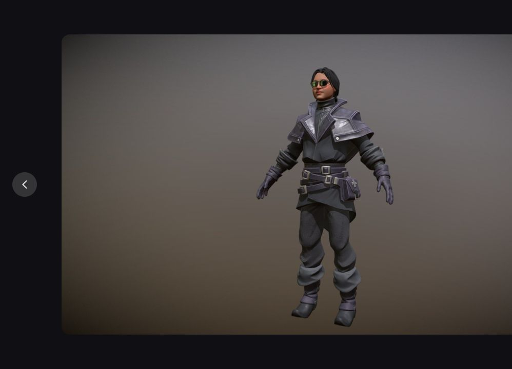
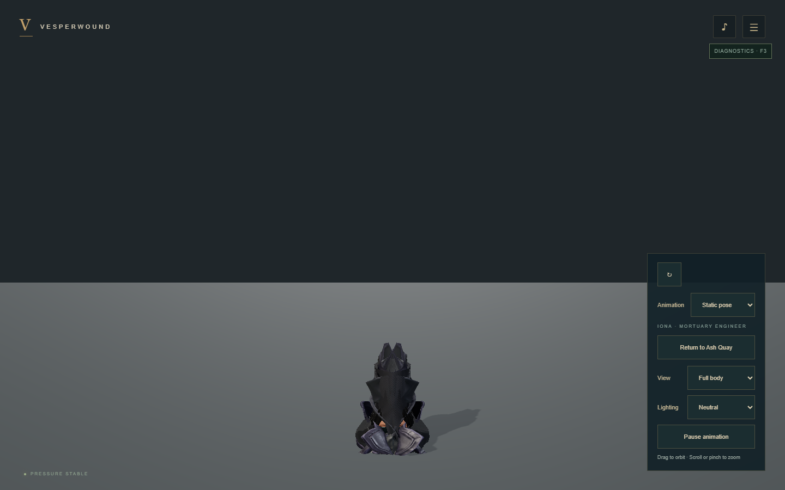
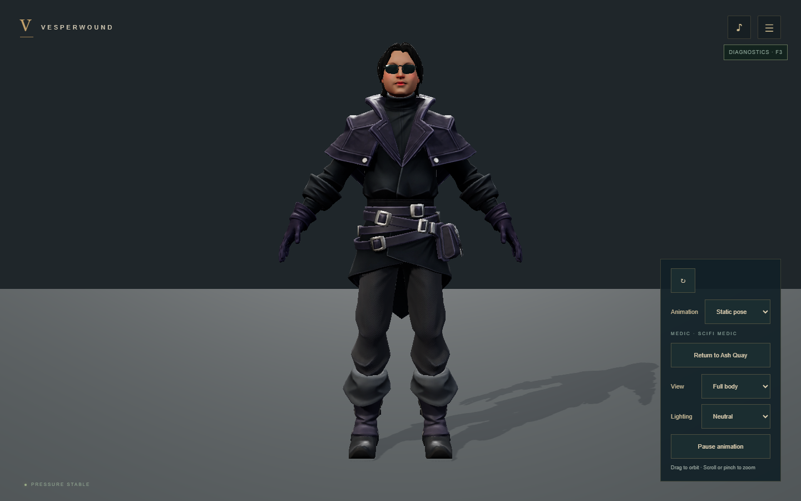
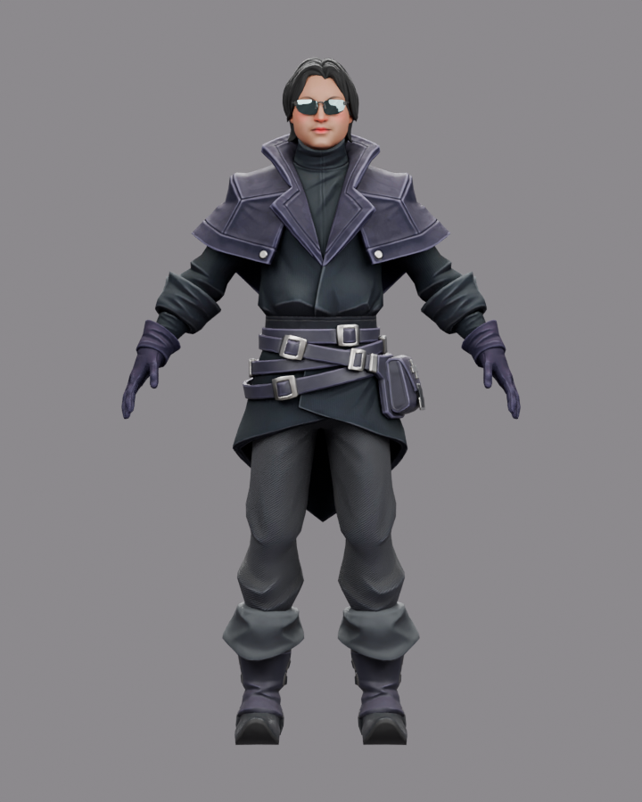

Fab Medic at Ash Quay
SciFi Medic - Rigged by Tony Flanagan · CC BY 4.0 · acquired 2026-10-06
The existing appearance, clothing, equipment and skeleton are retained. No animations were supplied. All three exports preserve the same native detail; the inspection option provides a studio view. The user accepted Medic on 2026-10-06.
| Tier | Triangles | Payload | Clips |
|---|
| desktop | 18,745 | 6.27 MiB | Static pose |
| mobile | 18,745 | 6.27 MiB | Static pose |
| cinematic | 18,745 | 6.27 MiB | Static pose |
Supplied reference and converted GLB defect

Fab listing reference screenshot; original author
Fab converted GLB: visibly collapsed skinning in browser
Fresh Blender export: restored supplied shapeThe raw conversion capture contains the former Iona caption from the transition; the active UI now labels the character Medic. Different source/browser lighting, tone mapping and orthographic/perspective cameras explain shading and framing differences.
front

Blender source, neutral lightsWebGPU, neutral studioWebGL2, neutral studioSource texture pixels versus compressed maps
Courtyard and mobile readability
Validation report · Provenance and hashes